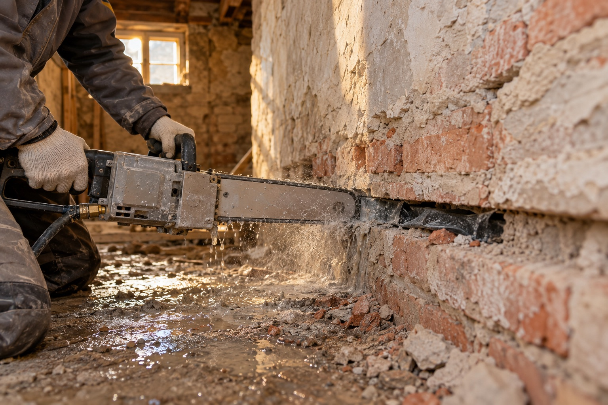

Fotka: Podřezání zdivaPodřezání zdiva
Jeden z nejúčinnějších způsobů dodatečné vodorovné izolace proti vzlínající vlhkosti. Zdivo se prořízne řetězovou pilou nebo diamantovým lanem a do spáry se vloží izolační fólie nebo sklolaminátová deska tloušťky 2 mm. Řeže se za sucha, bez chlazení vodou.